UNA GENERALIZACIÓN DEL PROBLEMA 137 José María Pedret. Ingeniero Naval. Esplugues de Llobregat (Barcelona) |
Luigi Cremona en el nº 217 de la página 180 de la edición inglesa de su obra nos dice: ".. Y el problema, Trazar una recta por un punto dado que divida un triángulo dado en dos partes cuyas áreas estén según una razón dada puede resolverse reduciéndolo a la siguiente construcción: Trazar desde un punto dado la tangente a una hipérbola de la que se conocen las asíntotas y una tangente. Se deja como ejercicio para el estudiante." |
Resolver este problema: TRAZAR UNA RECTA POR UN PUNTO DADO QUE DIVIDA UN TRIÁNGULO DADO EN DOS PARTES CUYAS ÁREAS ESTÉN SEGÚN UNA RAZÓN DADA Indicación: |
| 1. DIBUJO DEL ENUNCIADO |
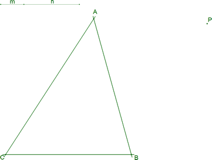 figura 2 Dibujamos un triángulo cualquiera en el plano definido por sus tres vértices A, B, C. En el plano del triángulo, dibujamos un punto cualquiera P. La razón ρ la expresamos como la razón entre dos segmentos m y n 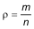 |
| 2. PLANTEAMIENTO |
| Prescindimos del punto P, tomamos, por ejemplo, un punto N cualquiera sobre CA y estudiamos la recta por N que corta a AB en N' y divide al triángulo en dos figuras cuyas áreas están según la razón dada ρ |
2.1 SUPONEMOS ESTA PARTE DEL PROBLEMA RESUELTO 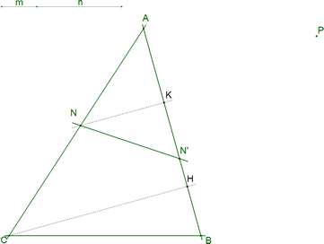 figura 3 Suponemos que en la figura 3 tenemos el problema resuelto. En esta situación se cumplirá: 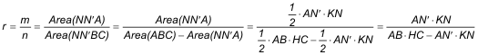 Ahora bien los triángulos AHC y AKN son semejantes por tener los lados paralelos 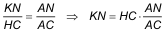 Introduciendo este resultado en la ecuación anterior 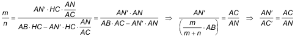 Por lo tanto a partir de N obtenemos N' mediante la biyección 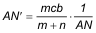 |
2.2 TRAZADO DE C' SOBRE AB 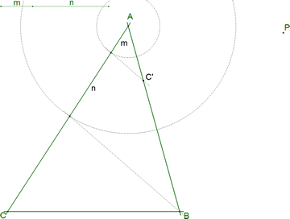 figura 4 Veamos 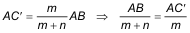 Trazamos con centro en A los círculos de radios n y radio m+n. Estos círculos cortan a CA. Por B, recta al extremo de m+n en CA; una paralela a esta última, por el extremo de m en CA, da C' en AB. C' es el transformado de C por la biyección establecida en 2.1 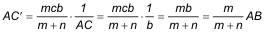 |
2.3 DADO UN PUNTO N DE AC; TRAZADO DE N' SOBRE AB 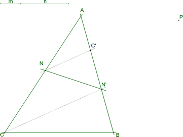 figura 5 Como 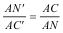 Podemos expresar esta proporción mediante una paralela a NC' que pasa por el punto C y corta a AB en N'. NN' divide a ABC según la razón del enunciado. 2.3.1 COMPROBACIÓN CON CABRI II De momento prescindimos del punto P. Figura 6 |
2.4 LA TRANSFORMACIÓN QUE LIGA N Y N' 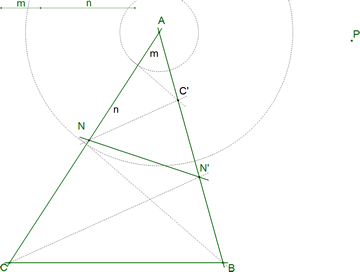 figura 7 Suponemos ahora que N1 y N2 son dos puntos sobre AC que se transforman en N'1 y N'2 sobre AB. A partir de lo visto en 2.1 ¿Cómo se transforma un segmento N1N2? 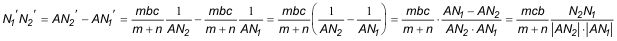 Sabiendo manejar segmentos sabemos manejar razones dobles 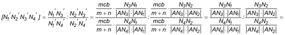 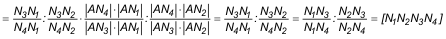 Vemos pues que la transformación que liga N con N' es una biyección que conserva la razón doble y por tanto podemos enunciar 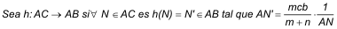 entoncesh ES UNA HOMOGRAFÍA ENTRE RECTAS PROYECTIVAS. |
| 3. PASO AL MUNDO DE LAS CÓNICAS |
| En este apartado, la clave está en el uso del TEOREMA DUAL del TEOREMA DE CHASLES-STEINER. Un estudio detallado de este teorema y sus vinculados se puede ver en los apartados 3 y 4 de la solución al problema 182 de las páginas de RICARDO
BARROSO. Aquí para practicar el paso al dual, enunciamos el teorema de CHASLES-STEINER y
lo dualizamos.? También puede verse el documento que acompaña a la resolución del problema 137 de TRIANGULOSCABRI DE RICARDO BARROSO: SI SOLO TENEMOS LOS CINCO PUNTOS QUE DEFINEN UNA CONICA (Un enfoque práctico para las construcciones con regla y compás)? |
TEOREMA DE CHASLES-STEINER Sean dos haces de rectas A* (de centro el punto A) y B* (de centro el punto B) y sea una biyección de haces de rectas 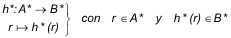 El lugar geométrico de la intersección de las rectas homólogas 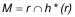 es una cónica por A y B, si y sólo si h* es una homografía entre haces de rectas. DUALIZACIÓN Sean dos rectas proyectivas a y b y sea una biyección de rectas proyectivas 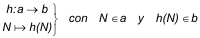 El lugar geométrico (envolvente) de las rectas que unen puntos homólogos 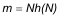 es una cónica tangente a a y b, si y sólo si h es una homografía entre rectas proyectivas. |
3.1 NUESTRA CÓNICA EL TEOREMA DUAL DE CHASLES-STEINER, aplicado a nuestra situación, nos dice: Dadas dos rectas AC y AB y la homografía entre rectas proyectivas 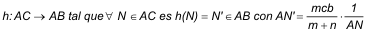 entonces el lugar geométrico (envolvente) de las rectas NN' es una cónica tangente a AC y a AB. Es claro que PARA CUALQUIER N, NN' ES UNA TANGENTE DE DICHA CÓNICA. |
| 4. EL PUNTO DE CONTACTO ENTRE UNA CÓNICA Y SU TANGENTE |
|
Por la homografía h definida en el apartado 2, ya sabemos que NN' es tangente a una cierta cónica envolvente de todas las rectas que unen a cualquier punto N de AC con su imagen N' de AB. Para avanzar un poco más, buscamos el punto de contacto entre la tangente y la cónica; para ello, utilizamos el TEOREMA DE BRIANCHON que, después de consultar los documentos hasta aquí citados, podemos presentarlo como DUAL DEL TEOREMA DE PASCAL y usarlo sin más. En 4.1 y 4.2 explicamos un procedimiento general par la determinación del punto de contacto. En 4.3 lo particularizamos para nuestro enunciado. |
EL TEOREMA DE BRIANCHON En un hexágono circunscrito a una cónica, las diagonales que unen los vértices opuestos pasan por un mismo punto. |
4.1 CINCO TANGENTES A UNA CÓNICA FORMAN UN HEXÁGONO CIRCUNSCRITO A LA MISMA 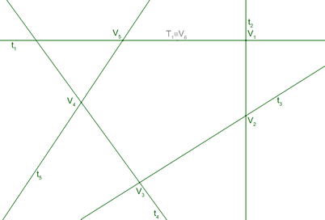 figura 8 Sean t1, t2, t3, t4, t5 las cinco tangentes cuya cónica queremos determinar. En principio forman un pentágono circunscrito a la cónica con cinco vértices 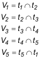 Pero podemos considerar al punto de contacto T1 sobre t1 como el sexto vértice V6 y considerar el hexágono V1V2V3V4V5V6 como el hexágono circunscrito que menciona el TEOREMA DE BRIANCHÓN. |
4.2 DETERMINACIÓN DE T1, PUNTO DE CONTACTO ENTRE LA CÓNICA Y t1 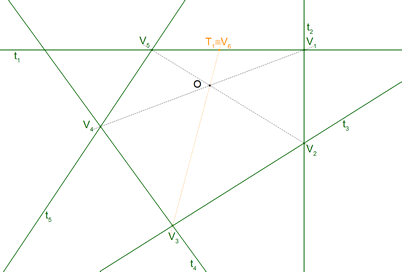 figura 9 Aplicaremos al hexágono determinado por las cinco tangentes el TEOREMA DE BRIANCHON. No conocemos el punto de contacto buscado (vértice V6); pero sabemos, por el TEOREMA que la diagonal V3V6 coincide en un mismo punto O con las otras diagonales. 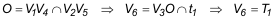 |
4.3 APLICACIÓN A NUESTRO ENUNCIADO 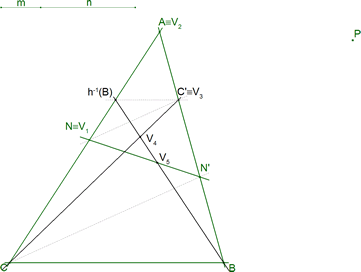 figura 10 4.3.1 IDENTIFICACIÓN DE LA NOTACIÓN Necesitamos cinco tangentes. Hasta llegar a este punto, ya hemos identificado cuatro de ellas CC', AC, AB y NN'. Nos falta otra más. Si aplicamos la construcción desarrollada en 2.3, una paralela por C' a BC corta a AC en la anti-imagen de B, entonces 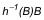 es una tangente a la cónica.Punto de contacto buscado 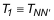 Como buscamos el punto de contacto entre la cónica y una tangente genérica denominamos 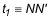 y luego, por ejemplo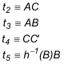 y por lo tanto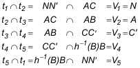 Utilizando este modelo, en el que las cuatro últimas tangentes son fijas y sólo la primera NN' es variable, ¡¡¡ LOS PUNTOS V2, V3, V4 SON FIJOS !!! 4.3.2 EL PUNTO DE CONTACTO 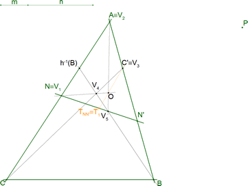 figura 11 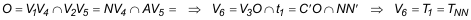 |
| 5. AC Y AB SON ASÍNTOTAS DE LA CÓNICA |
|
Ahora que sabemos determinar los puntos de contacto en nuestro problema, podemos ver que los puntos de contacto de AC y AB son respectivamente sus puntos de infinito. En consecuencia, AC y AB son asíntotas de la cónica. |
5.1 EL PUNTO DE CONTACTO DE LA TANGENTE AC 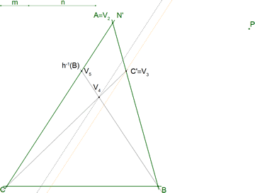 figura 12 En este caso, el método de construcción 2.3 nos indica que 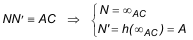 y por lo tanto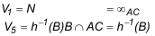 de donde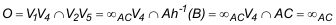 y asíPor lo tanto el punto de contacto está en el punto de infinito de AC y por ello AC ES UNA ASÍNTOTA DE LA CÓNICA |
5.2 EL PUNTO DE CONTACTO DE LA TANGENTE AB 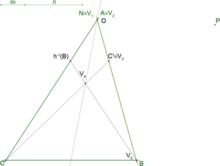 figura 13 En este caso, el método de construcción 2.3 nos indica que 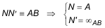 y por lo tanto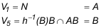 de donde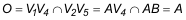 y así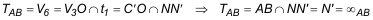 Por lo tanto el punto de contacto está en el punto de infinito de AB y por ello AB ES UNA ASÍNTOTA DE LA CÓNICA |
| 6. LA SOLUCIÓN |
| Hasta aquí, hemos visto, como dice el enunciado, que trazar una recta que divide al triángulo según una razón dada, equivale a trazar una tangente a una cónica de la que se conocen las asíntotas y una tangente (CC'). Ya sólo nos falta obligar a esa tangente a pasar por el punto dado P. El problema general es trazar desde un punto P una tangente a una cónica definida por cinco elementos (cinco puntos, cinco tangentes, cuatro puntos y una tangente...). Como conocemos tres tangentes y los puntos de contacto en dos de ellas (los puntos de infinito de las dos asíntotas) ya tenemos nuestro caso de construcción de la TANGENTE POR UN PUNTO DADO A UNA CÓNICA DEFINIDA POR TRES TANGENTES Y LOS PUNTOS DE CONTACTO DE DOS DE ELLAS. En esta parte, identificamos una homografía que facilita el camino y usamos que: La inversa de una homografía es una homografía La composición de homografías es una homografía. En espacios proyectivos de dimensión 1, tres pares de puntos correspondientes definen una homografía. Los puntos dobles (si existen) de una homografía de un círculo sobre sí mismo están en la intersección del eje de la homografía con el círculo. (Ver los apartados 3.3 y 3.4 de Gergonne y el Problema de Castillon)? |
| 6.1 PROYECCIONES DE CENTRO P DE LAS RECTAS AC Y AB SOBRE UN CÍRCULO QUE PASA POR EL PUNTO DADO P 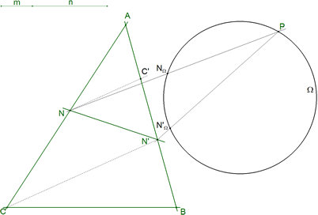 figura 14 Trazamos un círculo Ω cualquiera que pase por P. Desde P proyectamos AC sobre Ω del siguiente modo 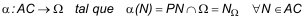 y desde P proyectamos AB sobre Ω del siguiente modo 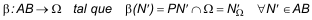 Sabemos que ambas proyecciones son homografías; podemos entonces estudiar la biyección 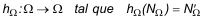 de aquí 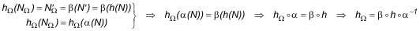 sabemos que la composición de homografías y la inversa de una homografía son también homografías, como 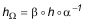 podemos concluir queLA HOMOGRAFÍA h ENTRE LAS RECTAS AB Y AC DEFINE UNA HOMOGRAFÍA hΩ DEL CÍRCULO SOBRE SÍ MISMO. |
6.2 ¿QUÉ ES UNA TANGENTE tP A LA CÓNICA QUE PASE POR EL PUNTO DADO P?
Sea tP una recta por P tangente a la cónica. Por ser tangente a la cónica, tP divide al triángulo en dos partes cuyas áreas están según la razón dada en el enunciado y además Tomando la homografía hΩ del círculo sobre sí mismo Con lo que Vemos que EΩ ES UN PUNTO DOBLE DE LA HOMOGRAFÍA hΩ DEL CÍRCULO SOBRE SÍ MISMO. Buscamos pues los puntos dobles de hΩ y obtenemos EE' que nos da la tangente por P a la cónica. |
6.3 LA HOMOGRAFÍA hΩ DEL CÍRCULO Ω SOBRE SÍ MISMO - DEFINICIÓN Recordamos ahora que, en espacios proyectivos de dimensión 1, tres pares de elementos correspondientes (homólogos) definen una única homografía.
Tenemos los tres pares de puntos homólogos necesarios para definir la homografía hΩ. Y además, sólo dependen de los datos del enunciado. Hemos visto en 3.1 que podemos definir por lo que con A, C, C' y las paralelas trazadas por P a AC y a AB definimos la homografía. (Es decir, hemos definido hΩ sólo con dos asíntotas, los puntos de contacto en ellas, y una tangente a la cónica.) |
6.4 LA HOMOGRAFÍA hΩ DEL CÍRCULO Ω SOBRE SÍ MISMO - EJE DE HOMOGRAFÍA
Recordemos que, dada una homografía k entre espacios proyectivos de dimensión 1, definida por tres pares de puntos homográficos (M1,M1'), (M2,M2'), (M3,M3') el eje de homografía de k es la recta que pasa por las siguientes puntos de intersección En nuestro caso, la homografía es hΩ y los tres pares de puntos correspondientes son y el eje de homografía pasa por los siguientes puntos |
6.5 LA HOMOGRAFÍA hΩ DEL CÍRCULO Ω SOBRE SÍ MISMO - PUNTOS DOBLES
Los puntos dobles de la homografía son |
6.6 LA SOLUCIÓN
la recta PEΩ que une el punto dado P con un punto doble de la homografía es la tangente solución El otro punto doble no es solución por que su tangente no corta al triángulo entre CA y entre AB. Obervamos, que ¡¡¡ EN NINGÚN MOMENTO HEMOS NECESITADO EL TRAZADO DE LA CÓNICA!!! |
| 7. LA SOLUCIÓN DINÁMICA (CABRI II) |
|
Hasta aquí, hemos desarrollado la solución para cuando la recta por P corte a CA y AB. Repetimos la misma construcción para el caso en que la recta corte a AB y BC; y lo mismo hacenos para el caso en que la recta corte a BC y CA. La recta sólo existe cuando corte simultáneamente a los dos lados del triángulo para los que se ha hecho la construcción. Dibujamos las tres cónicas posibles para facilitar la comprensión Puede haber de cero a seis rectas dependiendo de la forma del triángulo, de la posición de P y de la razón dada. |
|
Figura 20 |